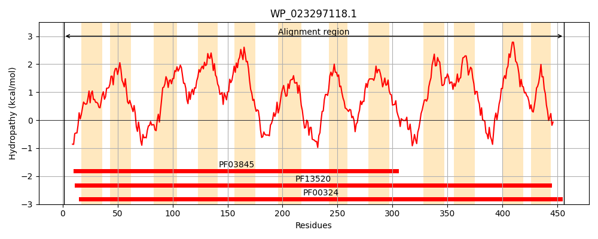
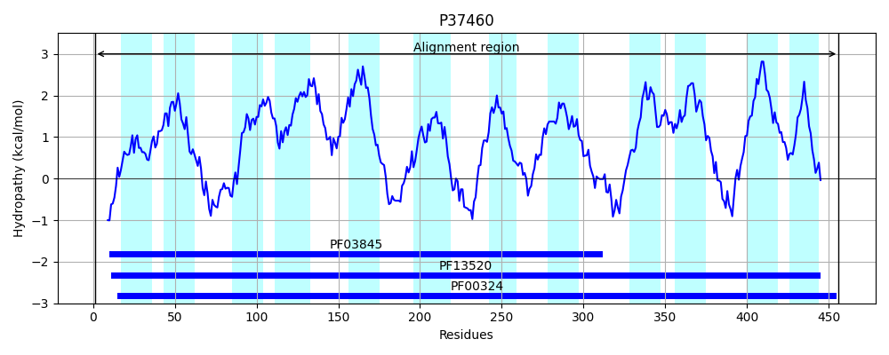
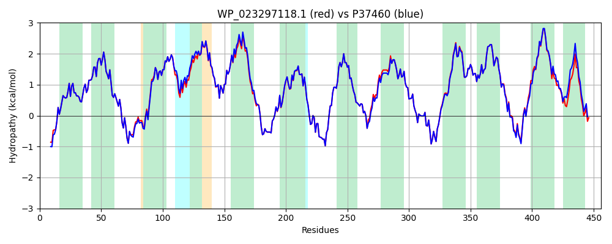

Hit Accession: P37460
Hit TCID: 2.A.3.1.6
Hit Description: gnl|BL_ORD_ID|10098 gnl|TC-DB|P37460|2.A.3.1.6 Proline-specific permease PROY - Salmonella typhimurium.
Mach Len: 456
e:0.000000
Query TMS Count : 12
Hit TMS Count: 12
TMS-Overlap Score: 11.500000
Predicted Substrates:CHEBI:26271;proline
BLAST Alignment:
Score: 2264 , Bit scores: 876 bits, E-value: 0.0e+00, Alignment length: 456, Percentage identity: 95
Query: 1 MESSNKLKRGLSTRHIRFMALGSAIGTGLFYGSADAIKMAGPSVLLAYIIGGVAAYIIMRALGEMSVHNPAASSFSRYAQENLGGLAGYITGWTYCFEILIVAIADVTAFGIYMGVWFPTVPHWIWVLSVVLIICAVNLMSVKVFGELEFWFSFFKVATIIIMILAGFGIIIWGIGNGGQPTGIHNLWSNGGFFSNGWLGMVMSLQMVMFAYGGIEIIGITAGEAKDPEKSIPRAINSVPMRILVFYVGTLFVIMSIYPWNQVGTDGSPFVLTFQHLGITFAASILNFVVLTASLSAINSDVFGVGRMLHGMAEQGSAPKVFAKTSRRGIPWVTVIVMTIALLFAVYLNYIMPENVFLVIASLATFATVWVWIMILLSQIAFRRRLSPEEVKALKFKVPGGVVTTVVGLVFLAFIIALIGYHPDTRISLYVGMAWIGLLLLGWVFKTRRDRRLAQA 456
MES+NKLKRGLSTRHIRFMALGSAIGTGLFYGSADAIKMAGPSVLLAYIIGGVAAYIIMRALGEMSVHNPAASSFSRYAQENLG LAGYITGWTYCFEILIVAIADVTAFGIYMGVWFP VPHWIWVLSVVLIICA+NLMSVKVFGELEFWFSFFKVATIIIMI+AG GII+WGIGNGGQPTGIHNLWSNGGFFSNGWLGM+MSLQMVMFAYGGIEIIGITAGEAKDPEKSIPRAINSVPMRILVFYVGTLFVIMSIYPWNQVGT+GSPFVLTFQH+GITFAASILNFVVLTASLSAINSDVFGVGRMLHGMAEQGSAPKVFAKTSRRGIPWVTV+VMTIALLFAVYLNYIMPENVFLVIASLATFATVWVWIMILLSQIAFRRRL PEEVKALKFKVPGGVVTT+ GL+FL FIIALIGYHPDTRISLYVG AWI LLL+GW+FK RRDR+LAQA
Sbjct: 1 MESNNKLKRGLSTRHIRFMALGSAIGTGLFYGSADAIKMAGPSVLLAYIIGGVAAYIIMRALGEMSVHNPAASSFSRYAQENLGPLAGYITGWTYCFEILIVAIADVTAFGIYMGVWFPAVPHWIWVLSVVLIICAINLMSVKVFGELEFWFSFFKVATIIIMIVAGIGIIVWGIGNGGQPTGIHNLWSNGGFFSNGWLGMIMSLQMVMFAYGGIEIIGITAGEAKDPEKSIPRAINSVPMRILVFYVGTLFVIMSIYPWNQVGTNGSPFVLTFQHMGITFAASILNFVVLTASLSAINSDVFGVGRMLHGMAEQGSAPKVFAKTSRRGIPWVTVLVMTIALLFAVYLNYIMPENVFLVIASLATFATVWVWIMILLSQIAFRRRLPPEEVKALKFKVPGGVVTTIAGLIFLVFIIALIGYHPDTRISLYVGFAWIVLLLIGWIFKRRRDRQLAQA 456 | Protein Hydropathy Plots: |
|---|
|  |  |
Pairwise Alignment-Hydropathy Plot:
|
|---|
|  |